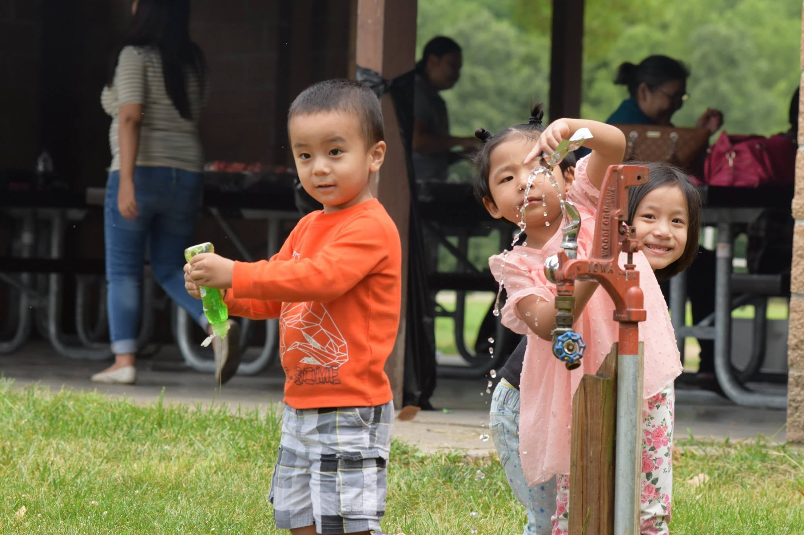
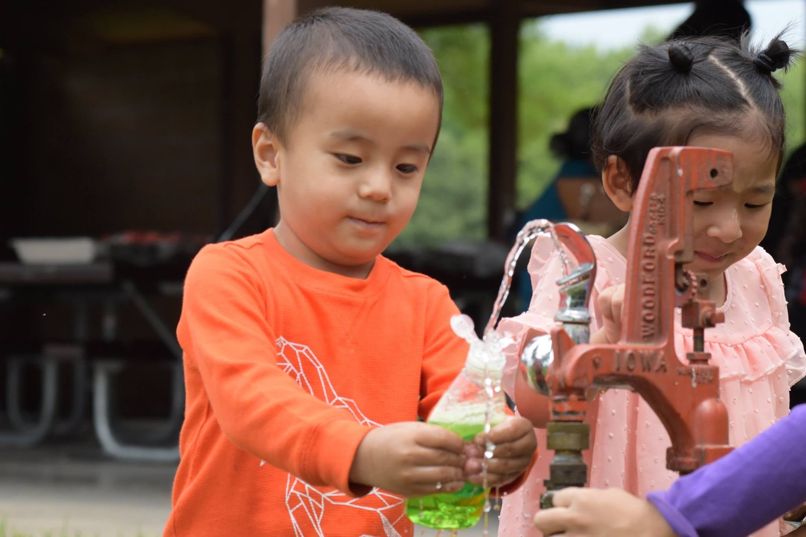
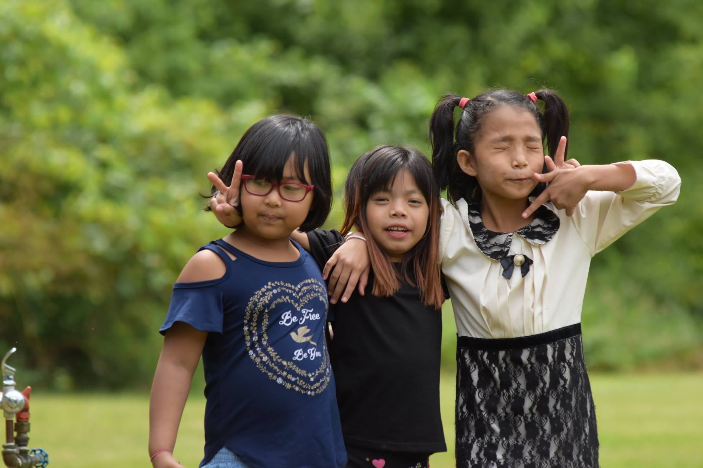
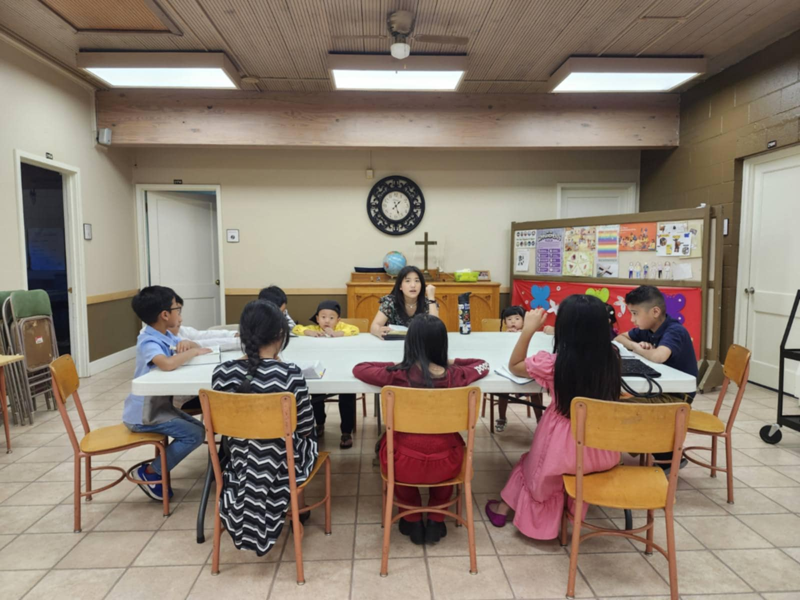
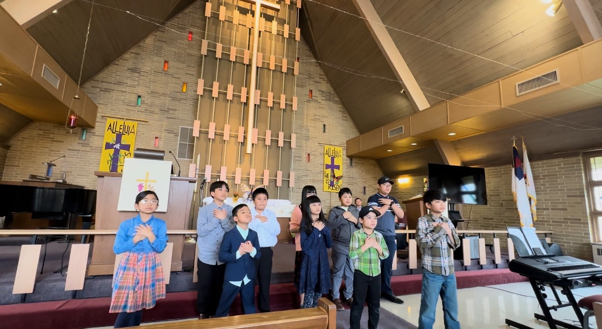
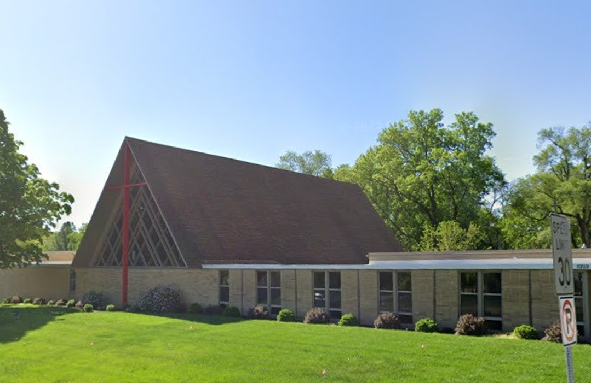

×

Who will have all men to be saved, and to come unto the knowledge of the truth.
1 Timothy 2:4 KJV
Rev. Dr. Paul serves as Senior Pastor of Gospel Baptist Church. He is committed to faithfully preaching God's Word, encouraging spiritual growth, and caring for the needs of the congregation and community. With over 22 years in ministry, he continues to serve with gratitude for God's calling and a heart to see people grow in their relationship with Christ. His desire is to point others to Jesus and to help the church live out the Gospel in everyday life. Rev. Dr. Paul considers it a privilege to shepherd the church and seeks to honor the Lord in all he does.
At GBC we love our children and are committed to teaching them the Word of God in a fun, safe environment. Our Sunday School ministry helps kids grow in faith through Bible stories, songs, and activities.
Children join during our Sunday service. We welcome all ages to learn and worship together.
Ask About Sunday School




Our youth group brings together teens and young adults to grow in faith, build friendships, and serve together. We meet for Bible study, worship, and fellowship in a space designed for the next generation.
Every last week of the month: Youth Program, 3:30 PM – 4:30 PM. Come join us!
Whether you're in middle school, high school, or college, you're welcome here. Join us to connect with other young believers and grow closer to Christ.
Join Us — Ask About Youth Group6222 University Ave, Des Moines, IA 50311
Sunday: 1:00 PM - 3:00 PM
Saturday: 10:00 AM - 11:00 AM

1:00 PM - 3:00 PM
Main Burmese language worship service with preaching and fellowship in Des Moines
10:00 AM - 11:00 AM
Morning prayer and Bible study in Burmese language
Join our Des Moines GBC community for authentic Burmese church services every week. Our church welcomes everyone to experience the love of Christ in a warm, welcoming environment.